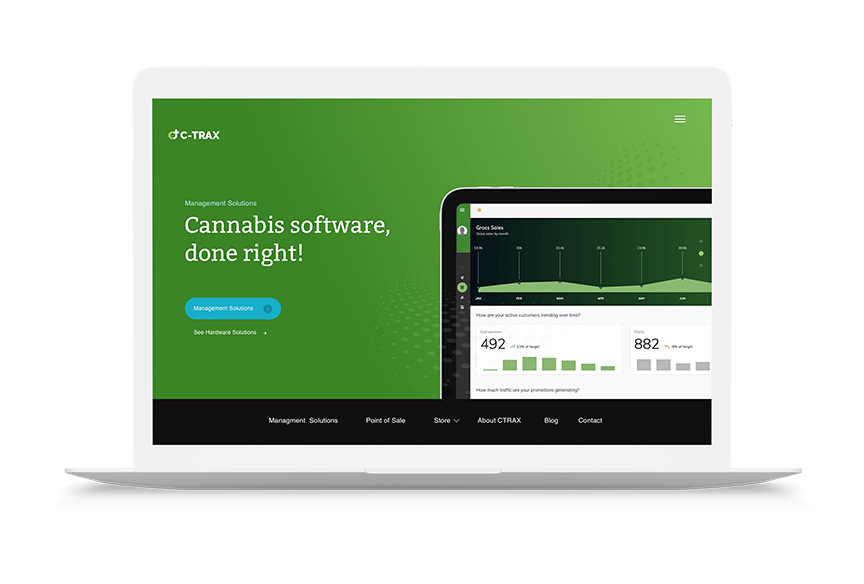
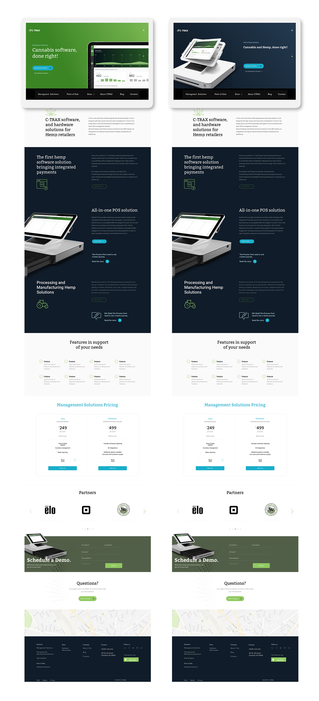

CTRAX · Brand & Systems Design
Overview
Most platforms look either like a dispensary menu or a generic SaaS dashboard. Neither builds the kind of trust that moves operators, retailers, and first-time customers through the same front door. CTRAX needed a brand and a product experience that could speak to all three without losing any of them.
Evaluating an inventory management and seed-to-sale POS platform. They needed credibility signals before anything else.
Assessing fit and pricing. Their decision process was different in pace and depth from operators, but just as deliberate.
Entering the purchase flow for the first time. They needed guidance, not a feature tour.
Brand Discovery
Before any visual decisions were made, I ran a brand discovery workshop with the CTRAX team. A brand spectrum exercise mapped where the brand needed to sit between competing tensions: credible vs. approachable, precise vs. warm, enterprise vs. accessible.
The insight that shaped everything: CTRAX needed to feel credible and precise without feeling cold. Cannabis in a suit and tie, but one that fits.
Brand Personality Spectrum
Information Architecture
Before any screens were designed, the product structure needed to be mapped. Two distinct products, POS and inventory management, serving three different user segments required a clear architecture to define how content, navigation, and user flows would connect across the platform.
The IA work established the hierarchy of information across both products, identified shared patterns that could be unified under one design system, and defined the entry points for each user segment without creating friction between them.

Solution

The homepage hero needed to bridge two distinct products, POS and inventory management, without making the platform feel like two separate things bolted together. The design system was the answer to that problem before a single screen was designed.
The visual language was built to work across brand, product, and marketing as one cohesive system. Bitter Regular anchored headlines and accents, bringing structure and authority. Open Sans handled body copy across three weights, keeping everything readable at every level. The color palette balanced trust and energy: Navy and Sky Blue for credibility, Cannabis Green and Teal for industry identity, neutral grays holding the system together at scale.
Three styling directions were explored before the final system came together:
The final system drew from all three. That range is what allowed CTRAX to show up consistently whether it was a product dashboard, a marketing page, or a sales asset, without any of it feeling like a different brand.

Outcomes
Distinct pathways aligned to operator, retailer, and customer intent, each with its own starting point and progression logic.
Orientation reinforced at every scroll depth across the full experience, users always knew where they were.
Built for trust-building with operators and retailers, with educational content structured as deliberate credibility-building, not marketing copy.
Streamlined with advanced payment handling, a non-trivial problem in cannabis commerce given payment processing constraints.
Consistent across both POS and inventory modules, with micro-interactions handling state changes, progress indicators, and transition cues.
Professional enough for enterprise conversations, distinct enough to signal this isn’t another generic SaaS platform. Cannabis in a suit and tie, but one that fits.